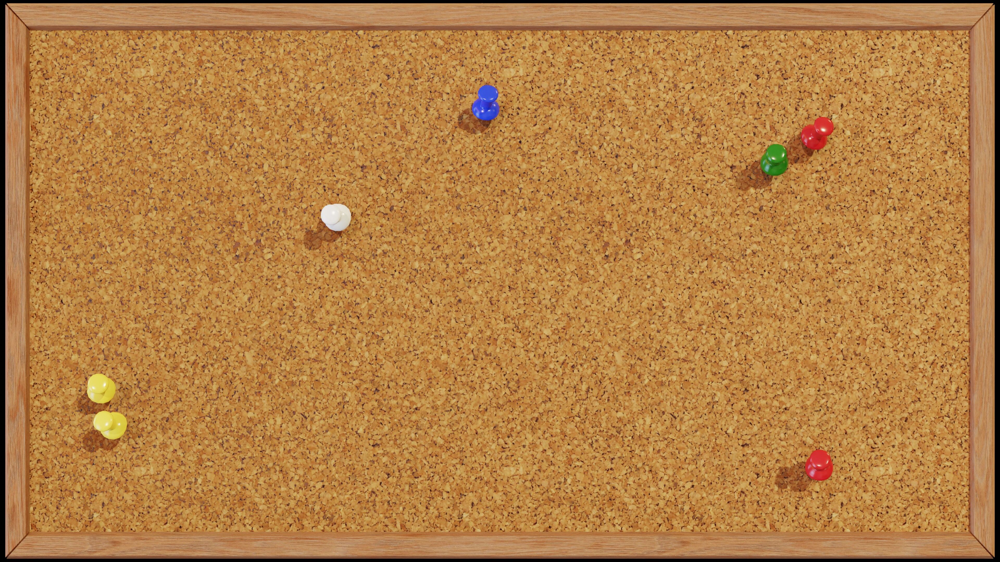

Lore of Appalachia
SHINING A LIGHT ON THE FOLKTALES OF APPALACHIA
“Pay heed to the tales of old wives. It may well be that they alone keep in memory what it was once needful for the wise to know.”
J.R.R. TOLKIEN
